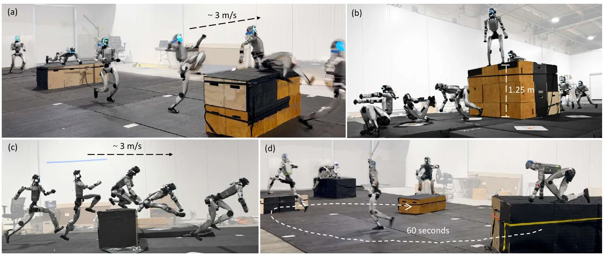
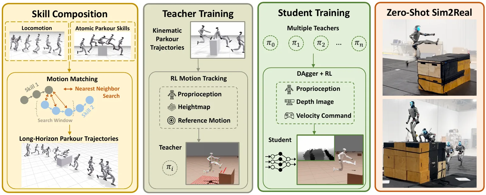
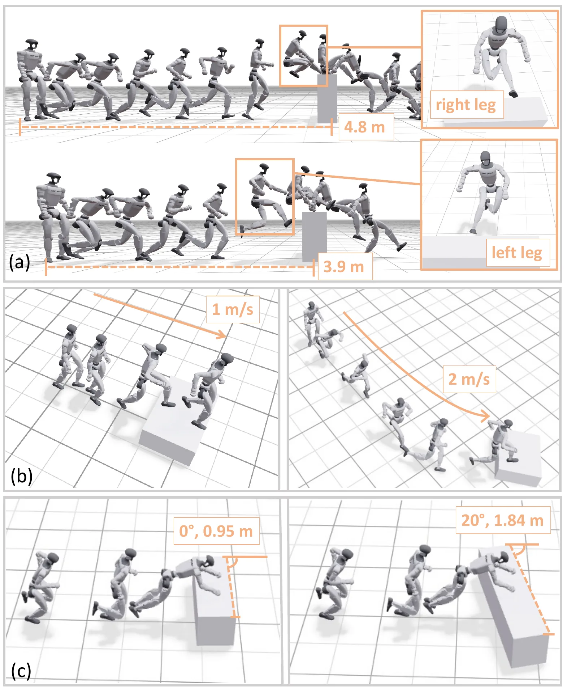
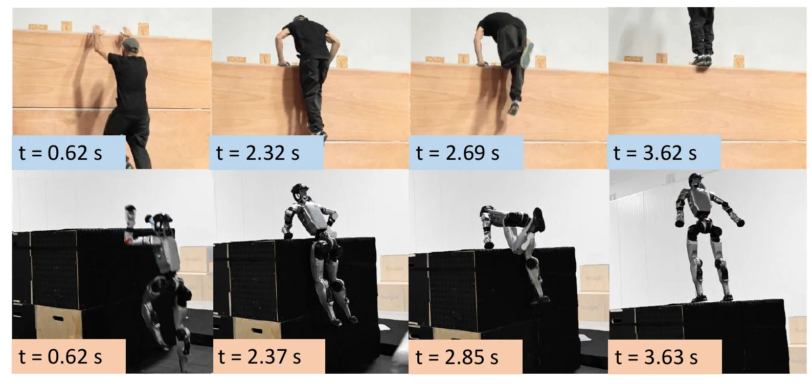
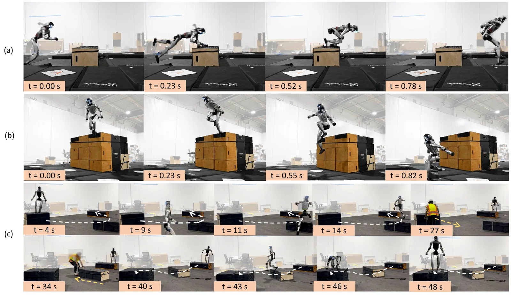

arXiv 2602.15827v2 · cs.RO · v1 2026 年 2 月 17 日，v2 2026 年 5 月 6 日 · RSS 2026 · 中文精读
Perceptive Humanoid Parkour: Chaining Dynamic Human Skills via Motion Matching
作者 Zhen Wu、Xiaoyu Huang、Lujie Yang（三人同等贡献）、Yuanhang Zhang、Xi Chen、Pieter Abbeel、Rocky Duan、Angjoo Kanazawa、Carmelo Sferrazza、Guanya Shi、C. Karen Liu，来自 Amazon FAR、UC Berkeley、CMU 和 Stanford。
关于这份精读。读的是 arXiv 最新版 v2（2026-05-06）。论文在 arXiv 上以 CC BY 4.0 发布。我用 pdftotext 全文检索了 copyright、©、rights reserved、permission，PDF 页脚和正文都没有与之矛盾的版权声明；v2 PDF 里也没有 RSS 的会议版权页。“RSS 2026”这个会议信息不在 PDF 里，来自项目主页和代码 README 的标题。v1 与 v2 的区别见读者注 1。
图 1 到图 5 从 arXiv PDF 裁切，只做了裁切、缩放和格式转换，没有改内容，版权归作者，按 CC BY 4.0 署名使用。表格不是图片，照录原文数字。图下文字和“读者注”是我写的，不属于论文内容，页尾有汇总。项目主页没有标明许可（页脚只说模板借自 Nerfies、OmniRetarget、BeyondMimic），所以本页只链接它，不抓取上面的视频和图。
代码。官方代码 amazon-far/php_parkour，Apache-2.0。我读的是提交 c7c9ce3（2026-10-12 23:16 −0700），连同它固定的子模块 holosoma 4a0bf04（标签 php-parkour-v1.0，2026-10-09，同为 Apache-2.0）。只读，没有运行；另外下载了作者发布的学生 ONNX，只解析了权重形状（读者注 22）。代码比 v2 晚五个月，默认配置不一定是论文实验所用；不一致的地方两边都写，对照表在 代码对照，复现步骤在 代码与复现要点。
arXiv 摘要页的元数据里，v1（2026-02-17）作者有 12 位，第五位是 Koushil Sreenath；v2（2026-05-06）只剩 11 位，他被去掉了。项目主页的 BibTeX 和 Sreenath 的主页链接仍保留，代码 README 的作者表则和 v2 一致。我只读了 v2 全文，没有逐页比对 v1 的正文改动。
人形机器人在各种地形上稳稳走路已经不难，难的是像人一样敏捷：翻越、攀爬、从高台跳下，而且要连成长串，还要靠自己看路来决定下一步做什么。PHP（Perceptive Humanoid Parkour）是一个分三步的框架：
真机上，学生策略零样本迁移到 G1（身高 1.3 m），能翻上 1.25 m 的墙（身高的 96%），约 3 m/s 的速度做猫跳、冲刺跳、速度跳，并在 48 到 60 秒的连续跑酷里自己选技能，对临时挪动约 0.5 m 的障碍做出调整。仿真里单障碍任务的成功率：
读完我认为最值得记住的三点：

和 BeyondMimic：专家就是它的跟踪配方。论文 III-C1 明说专家的奖励、终止和域随机化“follow BeyondMimic”，附录表 IV、表 V 照抄了那边的设定，两篇也有共同作者（Xiaoyu Huang、C. Karen Liu）。我逐项对过：表 IV 的六个跟踪项和三个正则项，与 BeyondMimic 页 RL 跟踪一节的式 M2、M3 是同一结构；σ（0.3、0.4、1.0、3.14）和权重在代码里也一致（holosoma config_values/wbt/g1/reward.py 加 PHP terrain.py:289-320 的覆盖）。PHP 改了三处：
experiment.py:143-153）；BeyondMimic 用引导扩散在单一策略里组合技能；PHP 不在策略层面组合，而是先在运动学层面用 motion matching 拼，再靠蒸馏把多专家合成一个策略。
和 SONIC：两条放大路线。SONIC 把动作跟踪本身放大成通用控制器，一个策略跟踪海量动作。PHP 走另一条路：每个技能单独训专家，再蒸馏成只看深度的学生，而且学生不再跟踪参考动作，只接收离散速度命令。PHP 正文没有引用 SONIC 来比较（参考文献 [24] 只出现在“用学到的运动学模型生成过渡”那一类引用里）。
和同批两篇。holosoma-15min（arXiv 2512.01996）讲的是 holosoma 框架里 FastSAC 15 分钟训出行走。PHP 的训练代码就跑在 holosoma 上：子模块 thirdparty/holosoma 提供环境管理器、PPO、DistillationPPO 和 Warp 深度相机；holosoma 的 G1 跟踪配置里也有 FastSAC 版本（g1_29dof_wbt_fast_sac），但 PHP 的预设全都基于 PPO。RPL（arXiv 2602.03002）同样是“特权专家 → 深度学生”的蒸馏，可以对照两边怎样处理纯 DAgger 的不足。PHP 的做法是在蒸馏过程中混入 PPO；它在 §II 和 §IV-B3 特别区分了另一种做法，即先蒸出 DAgger 策略、再单独做 RL 微调（Parkour in the Wild，参考文献 [33]）。这两页正由别人同时在写，链接可能暂时打不开。
目标。人能根据看到的地形快速选择并串联全身技能。作者想让人形也做到，并把跑酷当作一个具体、自成一体的测试场。
跑酷的三个难点。
数据稀缺。人体动作数据已经被用来学跳、滚、翻（BeyondMimic、OmniRetarget）。但高动态动作很难采：要专门的场地和精细整理，一个技能常常只有一两段、每段几秒。长时域任务又同时需要“同一技能内部随接近方式而变化”和“技能之间自然过渡”。
做法。用 motion matching 在设计好的特征空间里做最近邻检索，把片段拼接成长动作。关键在于它能“加密”稀疏的动作库：在保留动捕真实感的同时，产生各种接近距离、朝向和时机的过渡。视觉策略方面，常规做法是先训特权专家，再用 DAgger 蒸馏成视觉学生；但对人形跑酷，纯模仿损失不够，误差累积会让攀爬、翻越这类动作失败，所以给蒸馏加一个 RL 目标，提供任务层面的纠正信号。
三项贡献。
盲走在斜坡、楼梯这类中等结构化地形上已经很稳（四足上的 [19, 28, 21, 18]）。感知让机器人能过更难的地形：稀疏落脚点、沟、高障碍。四足已经能连续跳沟、爬障碍完成跑酷路线 [8, 23, 13, 33]。
搬到人形上不容易。四足跑酷常能靠奖励塑形从零学，人形全身维度太高，这样做扩展不了。所以已有的人形感知行走多是低动态的：爬楼梯 [22, 45]、稀疏落脚 [37, 12, 2]、踏上矮平台 [53]。为降低探索难度，多数工作用师生管线：特权专家加 DAgger 蒸馏出视觉学生 [8, 33]。PHP 沿用这一范式，但发现纯 DAgger 对高动态人形技能不够，所以加 RL。作者强调这和 [33] 的微调阶段不同：[33] 是把已经学好的 DAgger 策略再适配到没见过的地形。
人体参考动作能减少奖励工程、得到敏捷自然的动作 [20, 43, 49, 29, 40, 7]，代价是技能更难串起来。四足靠奖励塑形时，过渡可以由单一策略隐式学到，或用共享的行走状态做专家切换或蒸馏。人体数据的风格差异大，可能落在状态空间里互不相连的区域，长时域组合是根本难题。
目标是让人形用机载感知自主完成多障碍跑酷。流程是：先用 motion matching 把走跑和原子跑酷技能组合成长时域运动学参考；再在仿真里用特权观测训练动作跟踪专家；最后用 DAgger 加 PPO 目标把专家蒸馏成基于深度图的学生，零样本部署。

motion matching [5, 9] 来自游戏业的交互角色控制：每帧或每个过渡点，从大数据库里挑一帧，它的特征既最像当前姿态、又最符合期望的未来行为，然后从这帧接着播放。PHP 把它当作离线合成模块，用来把稀缺的原子技能和走跑拼成长参考。
1) 基本 motion matching。动作数据库有 \(N\) 帧，每帧 \(i\) 有运动学姿态 \(\mathbf q_i\) 和由它导出的匹配特征 \(\mathbf x_i\)。按 Learned Motion Matching [14]，\(\mathbf x_i\) 拼接了（i）短时域的未来轨迹位置和朝向，（ii）局部脚部关节位置和速度，（iii）根速度，都在角色局部坐标系里（细节见附录 A）。
做过渡时，把期望的 2D 速度命令换成期望的未来轨迹和朝向，再和当前状态的脚位置、速度、根速度拼成查询特征 \(\hat{\mathbf x}_t\)，检索最佳匹配帧：
\(\mathcal C_t\) 是用户指定的下一个技能的搜索窗口。检索按周期做（每 \(M\) 帧一次），或在速度命令变化很大时触发。选中 \(i^\star_t\) 后，播放跳到这一帧并顺序往下放，直到下一次检索。过渡附近加一个短的混合窗口避免不连续。
式 (1) 写的是普通平方距离。代码 core/features.py:360-364 给五类特征各设一个权重：脚位置 0.75，脚速度 1.0，髋速度 1.0，轨迹位置 1.0，轨迹朝向 1.5（注释说取自 Holden 的 controller.cpp）。normalize_feature_exact（148-191 行）再把每类特征除以“该类各维标准差的平均 / 权重”。所以实际是加权、按类标准化后的欧氏距离。数据库检索还支持一个切换代价 transition_cost（core/database.py:375-415），论文没提。论文没给 \(M\)；代码 run.py:269 的 search_time = 0.1 秒，在 60 FPS 的数据库里就是 \(M=6\) 帧。
2) 长时域跑酷轨迹合成。走和跑是到处可用、天然可复用的连接件，所以长轨迹都写成 Locomotion → Parkour Skill → Locomotion 的形式。所有技能都经过共享的走跑流形，不同技能之间就能一致地过渡，不需要为每对技能专门采过渡动作，也就能扩展到长时域组合。
维护（i）一个走跑数据库 \(\mathcal D_{\rm loco}=\{(\mathbf x^{\rm loco}_i,\mathbf q^{\rm loco}_i)\}\) 和（ii）每个跑酷技能 \(k\) 一个技能库 \(\mathcal D_k\)。每段技能片段配一个地形资产。对 \(\mathcal D_k\) 里每段原子技能，人工标出技能起止帧 \((s_k,e_k)\)，再定义一个长度 \(H_k\) 随技能而定的进入窗口：
它对应主要接触动作之前的接近阶段，只有在这一段里切进片段才有意义。比如翻越片段，\(\mathcal E_k\) 覆盖起跳前最后几步，不会在接近阶段之外切入。
代码的技能注册表 scenarios/skill_registry.py 给每个技能写 search_ranges，每项是三个帧号，按 README 的说法是（开始搜索帧，结束搜索帧，片段终止帧），对应 \((s_k-H_k,\ s_k,\ e_k)\)。比如 climb_76 是 (82, 137, 645) 和它的镜像 (756, 811, 1319)，进入窗口 55 帧，60 FPS 下约 0.92 s。多数技能都有原片和镜像两段，但 cat_vault 只有一段 (74, 88, 149)（第 238 行），进入窗口只有 14 帧，约 0.23 s。我据此推断猫跳没有镜像版本可选，和附录 A1“所有片段都镜像”不一致（未运行核实）。

数据集构建。按如下方式滚动生成长参考轨迹（图 3(b)）：
整个过程中记录每个时间步的速度命令和生成的运动学参考姿态 \(\{\mathbf q_t\}\)，成对用于后面的策略训练。
过渡密度。motion matching 允许从特征空间里相近的多种走跑状态进入同一个技能，所以天然产生很密的过渡。作者借此生成入口距离和步态相位各不相同的技能入口（比如起跳前多垫一步，或在跑步的不同相位开始翻越），让技能前的状态分布更密。图 3(a) 里，初始距离 3.9 m 和 4.8 m 迫使引擎选出不同的步幅序列，得到左腿领先和右腿领先两种入口姿态。为防止策略走非因果的捷径（例如靠经过的时间或步数判断何时起跳），技能前的走跑时长从 [0.1, 3] s 均匀采样，“平均间隔 0.3 s”。这样多样的动作-地形配对促使策略按情境反应，对“在不同距离和时机都能可靠触发正确技能”很关键。
[0.1, 3] 上均匀分布的均值是 1.55 s，所以“平均间隔 0.3 s”说的不是时长的均值。我猜指采样点之间的平均间距：(3 − 0.1) / 0.3 ≈ 9.7，约十个取值（我的推断）。发布的场景脚本里也不是连续均匀采样，而是固定网格。比如 scenarios/builtin.py:123 的 low_speed_step 用 walk_duration_list = [0.5, 0.8, 1.2, 1.5]，前面再固定直行 1 s；其他场景的网格类似（第 198、298、349、415、468、611、773 行）。
论文写 low 1 m/s、high 2 m/s。代码 builtin.py:25-28 是 WALKING_SPEED = 0.8、RUNNING_SPEED = 2.2；high_speed_dash_vault 单独用 2.0（第 837 行），low_speed_climb_94 等场景里也有 1.5 m/s 的段。附录 B1 说走跑库覆盖 0.8 到 3.5 m/s。学生接收的速度命令是 15 维 one-hot（VEL_CMD_DIM = 15，第 23 行），映射表 VEL_CMD_MAPPING 只用到 12 个：站立、走五个方向、跑五个方向、后退。sim2sim 里的键位也是离散的（w/s 前后，a/d 45°，q/e 90°，= 切换快慢），和摘要说的“离散 2D 速度命令”一致。
官方示例数据里 low-speed step 有 56 对动作/地形，我从脚本数出来了。low_speed_step 用 5 个方向 × 4 个走跑时长 × 3 种平台停留时长（0、0.5、1.0 s），共 60 种；停留时长为 0 时有一句 if angular_velocity == 90.0: continue（第 166 行），只跳过左转 90°，不跳过右转 90°，少 4 种，得 56，和 release-assets.json 的 motion_count = 56 一致。左右不对称看起来不是有意为之（我的推断）。
地形随机化。为了在不让参考失效的前提下增强对训练障碍之外的鲁棒性，在每条合成轨迹周围随机化障碍的几何和位姿：障碍宽度从参考所需的最小值到 1.5 m 之间采样，其他尺寸在 ±5 cm 内扰动，偏航在 ±45° 内随机（图 3(c)）。这让策略见到不同形状和位姿的障碍，参考仍然可行。
干扰物。在参考轨迹附近随机放一些大小、位姿随机的箱子，提高对无关物体的鲁棒性，减少在真实世界里过拟合。
宽度对得上：utils/data_utils.py:200-252 的 randomize_box_x_numpy 把箱子沿局部 x 轴左右两半各在 [原尺寸/2, 0.75] 里均匀抽，总宽最大 1.5 m，每个障碍 10 个变体（metadata/constants.py:16）。“±5 cm”也有：训练端 wbt_training/utils/obstacle_helpers.py:256-279 给高于 0.2 m 的顶点加整体 ±5 cm 和逐点 ±2 cm 的均匀噪声。偏航不一样：同一文件建网格时，对除地面以外的每个箱子都乘一个 U(−π, π) 的随机偏航（第 233、312 行），而不是 ±45°。这是否也作用在路径上的主障碍上，会不会让参考失效，我没运行代码，未核实。干扰物在 random_locomotion 里：每隔一条配置放 5 到 15 个离路径至少 0.35 m 的箱子（builtin.py:103-116）。
自己画的 · 11 幕 3D 框架动画
PHP 的三段流程拆成 11 幕：原子技能库与重定向、motion matching 最近邻（当场检索）、按式 (5) 当场算的弹簧轨迹和长轨迹拼接、地形配对与随机化、专家跟踪的特权观测、深度相机与学生网络（当场光线投射一张 58×87 深度图）、DAgger + PPO 课程、多技能切换、真机部署管线、结果表。可以暂停、拖进度、旋转画面、切换论文/代码。
目标是一个能做多种长时域跑酷技能的感知策略：给它目标速度，它根据看到的障碍自主执行技能。技能动态性高，所以先为每个技能训练专家，保证动作质量，再蒸馏成一个视觉运动策略。为了可扩展，专家和蒸馏都用统一的设定，不对单个动作调参。
1) 用动作跟踪训练专家。跟踪沿用 BeyondMimic [20] 和 OmniRetarget [43]，细节请看原文献。
论文写 0.7 m × 0.7 m。代码里的高度扫描来自 holosoma 的 IsaacSim 射线传感器：GridPatternCfg(resolution=0.1, size=[1.6, 1.6])（holosoma/simulator/isaacsim/isaacsim.py:469），即 1.6 m × 1.6 m、0.1 m 间距、17 × 17 = 289 个点。experiment.py:125-128 的注释也说去掉高度扫描时少 289 个读数，演员输入从 449 降到 160 维。PHP 仓库里没有覆盖这个网格的地方，所以发布代码的专家看到的范围比论文大一倍多（边长 1.6 / 0.7 ≈ 2.3 倍）。
论文说参考“骨盆”位姿误差、骨盆全局位置。代码默认的锚点是 torso_link（holosoma config_values/wbt/g1/command.py:35 的 body_name_ref）。PHP 另有骨盆锚点的变体 g1_wbt_terrain_ref_pelvis（experiment.py:167-173），注释说“新训练用骨盆，躯干版保留是为了让已有检查点可复现”，但教师启动脚本 run_terrain_teacher.sh:18 用的仍是躯干版 exp:g1-wbt-terrain-ref-noscale。专家观测项见 terrain.py:115-158：motion_command、motion_ref_pos_b、motion_ref_ori_b、base_lin_vel、base_ang_vel、dof_pos、dof_vel、actions、height_scan。
2) 用 DAgger 和 RL 蒸馏统一的学生策略。从多个专家学统一策略，常见做法是 DAgger 式模仿 [32, 8, 52, 33, 20]。对踏步这类较容易的动作有效，但作者发现对攀爬、翻越这类高动态技能，只用 DAgger 不够。这些技能依赖短暂的大力矩爆发，而逐步模仿目标不看回合结果，不会特别偏向这种大力矩动作。比如两个动作让根部比参考高或低同样多，DAgger 损失相同，但只有更高的那条轨迹能翻过障碍。于是在 DAgger 之外加 PPO，并配一个课程：
\(\lambda_{\rm PPO},\lambda_{\rm D}\) 是课程权重。PPO 的主要作用是提供以成功为导向的信号，鼓励利用专家行为（比如大力矩动作），而不是探索专家技能分布以外的东西。这样的混合显著提高了统一策略在多种高动态技能上的表现。
混合损失在 holosoma 的 agents/distillation_ppo/distillation_ppo.py:690-695，写成公式是
\[ \mathcal L=c_v\mathcal L_V+\overline{g\lambda_{\rm PPO}\,(\mathcal L_{\rm surr}-c_e\mathcal H)}+\overline{(1-g\lambda_{\rm PPO})\cdot 10\cdot \mathcal L_{\rm D}} \]
上划线表示对批内样本取平均，\(c_v=1\)，\(c_e=0.001\)。和论文的区别有四点：
depth_distillation.py:216-260，ppo_gate_enabled: True）：动作时间轴分成约 1 秒的格子，用指数滑动平均记录每格的 DAgger 残差；残差在 50% 分位以下的格子 \(g=0.5\)，95% 分位以上 \(g=1\)，中间线性过渡，再向前多涂一格。效果是模仿已经做好的相位更接近纯 DAgger，模仿做不好的相位保留全部奖励压力。注释说它替换了一个按骨盆高度阈值手写的旧规则。观测、动作和域随机化。学生观测本体感觉：骨盆重力向量和角速度、关节位置和速度、上一步动作。视觉用 NVIDIA Warp 渲染的深度图，吞吐高。另外接收 §III-B2 定义的速度命令。动作空间和域随机化与专家相同。
相机建模和深度伪影。标定仿真相机的方法：在一组姿态下，比较仿真和真机里机器人自身可见部分的感兴趣区域（ROI）重叠。在标定值附近随机化外参，平移 2.5 cm、旋转 2.5° 以内，增强对视角偏移和安装差异的鲁棒性。按 [33] 注入真实感的深度噪声，但不用高斯模糊，因为高速时它会模糊掉障碍。观测延迟在 60 到 80 ms 之间随机，模拟硬件延迟波动。
sensors/warp/camera_config/d435i_depth_config.py:28-39）：平移 ±2.5 cm 一致；旋转是 roll、yaw ±2.5°，pitch ±3.0°。managers/observation/terms/depth.py:120 是 torch.randn(...) * 0.03，即标准差 3 cm 的高斯，不是 ±3 cm 的均匀分布。逐像素 3 cm 高斯噪声在第 353 行，一致；另有 Perlin 噪声打洞（enable_holes: True）。terrain.py:233 的 push_interval_s 是 [0.5, 1.0] s；推速上限 (0.1, 0.1, 0.05, 0.1, 0.1, 0.1) 一致。terrain.py:223 是 ±0.05；其余关节 ±0.01 一致。延迟一致：depth_distillation.py:131 的 latency_frame = (3, 4)，按 holosoma 默认 200 Hz 仿真、每 4 步控制一次（config_values/simulator.py:20-21）算，策略 50 Hz，3 到 4 帧就是 60 到 80 ms。
课程。早期 PPO 梯度很噪，会破坏蒸馏，所以用一个从 DAgger 逐渐转向 PPO 的预热课程，分三部分：
按上式，\(\lambda_{\rm PPO}=1-\lambda_{\rm D}=k/10000\)（\(K=20000\)），超过 0.1 的时刻正是 \(k=1000\)。表 VI 写蒸馏的学习率调度是“adaptive after 1000 iterations”，和第 3 条自洽。代码里也一样：自适应学习率在 ppo_coef > 0.1 时才启用（distillation_ppo.py:636-638），动作标准差的学习率在此之前置零（381-391 行）。终止放宽在 depth_distillation.py:163-177：bad_tracking 的三个阈值从第 24,000 步到第 240,000 步线性乘到 2 倍，0.5 m 变 1.0 m，和论文一致。每次迭代每个环境走 24 步，24,000 和 240,000 步就是第 1000 和第 10,000 次迭代（我的推断：这个计数按每个环境的步数算）。所以代码的放宽从第 1000 次迭代才开始，不是论文说的“同样的线性日程”从 0 开始。
自适应采样在学生训练时关掉。它帮专家盯住失败、学会难段，但会欠采样那些“临界”片段：仿真里不失败、却有抖动，上真机常有大的 sim-to-real 差距。为避免技能间数据不平衡，各技能等概率采样，技能内部均匀采样。
学生关掉自适应采样：depth_distillation.py:197-199 设 use_adaptive_timesteps_sampler=False。按技能等概率：motion_command.py:370-402 的 _sample_expert_balanced 先均匀选专家，再在该专家的帧里均匀选。附录 B3 说学生越过专家原阈值、但没越过放宽后的阈值时，不再用 DAgger 损失：代码 which_motion（motion_command.py:698-750）在锚点位置误差 > 0.5 m、重力方向差 > 0.8，或脚踝、手腕位置误差 > 0.5 m 时，把路由下标改成 −1，专家输出零动作，PhpDistillationPPO._dagger_loss_per_sample（student_teacher.py:190-206）把这些行乘 0。
注意纯 DAgger 预设（FINETUNE=0）不做这个屏蔽，会把学生往零动作拉（student_teacher.py:139-147 的说明）。它的学生网络也缩小成 [512, 256, 128]，只训 10,000 次（experiment.py:257-290）。论文表 II 的“DAgger Only”没说换了网络，所以这个预设不一定就是论文的消融设置（未核实）。
在 Unitree G1 人形（1.3 m 高，29 自由度）上做仿真和真机实验。训练用 3 层 CNN 和 5 层 MLP（隐藏层 [2048, 1024, 512, 256, 128]），16,384 个并行环境。专家和学生都训 20K 次迭代。
正文这句容易读成专家也用 5 层 MLP，但表 VI 里专家（Motion Tracking）是 [512, 256, 128]，只有学生是 5 层；代码 experiment.py:185-196 同表 VI。迭代数：教师 20,000 一致（experiment.py:89），学生在代码里是 num_learning_iterations=30000（第 217 行），README 的手动导出示例也是 model_29999.pt。代码里 PPO 爬升的终点仍是第 10,000 次迭代（dagger_end_epoch），所以在代码里它是总长的 1/3，不是论文的一半。
真机任务同时考察高动态单技能、长时域多技能组合和对环境变化的适应。所有技能执行都是自主的，只给简单的 2D 速度命令用来导航。
1) 人类水平的敏捷。
高墙攀爬，和人比。把机器人的高墙攀爬和一位人类做同一动作的视频 [34] 对比。高墙攀爬虽是跑酷基本功，但要很强的上肢力量和精确的全身协调，没受过训练的人很难做到。机器人的速度和人相当：关键事件（蹬离 → 拉起 → 摆腿 → 站稳）的时间很接近。墙高 1.25 m（机器人身高的 96%），从蹬离算起 3.63 s 站上平台。

更多跑酷技能。这些技能要求快速切换接触、保持动量。图 5(a)：机器人从蹬离到落地 0.8 s 内越过 0.4 m 高、0.5 m 长的障碍，向前超过 2 m（身高的 154%），峰值前进速度 3.41 m/s，平均 2.53 m/s，说明动量在接触中保持得好。图 5(b)：从 1.25 m 平台跳下，落地时下肢屈曲吸收冲击、稳住姿态。
1.25 / 1.3 = 0.962，即 96%；2 / 1.3 = 1.54，即 154%；平均 2.53 m/s × 0.8 s = 2.02 m，与“超过 2 m”吻合。高墙攀爬机器人比人慢 0.01 s（3.63 对 3.62），中间两个时刻分别慢 0.05 s 和 0.16 s。
2) 多障碍路线。框架的一个关键优势是：训练数据只有单障碍穿越，策略却能泛化到复杂的多障碍路线。这来自 motion-matching 组合：它合成的长参考通过共享的走跑段明确地串联技能，并让策略见到各种接近距离和时机。结果是策略在不同障碍序列上都能可靠执行技能，不需要多障碍的显式监督。
多种技能和对障碍变化的适应。图 5(c)：机器人把踏步、低墙和高墙攀爬组合成连续通过多障碍的一段跑。视觉运动策略在线生成过渡，全程顺畅切换。为展示闭环适应，执行过程中把多个障碍随机挪动约 0.5 m；策略调整接近方式和动作时机，继续完成路线。

1) 实验设置。所有方法都用跑酷穿越任务的成功率评估。每个任务要求机器人以固定命令速度（1.0 或 2.0 m/s）前进，越过一个指定高度、带 20° 偏航随机的单个障碍。为改变接近条件，机器人初始化在障碍前的随机距离：1 m/s 任务在 1.5 到 3.0 m 均匀采样，2 m/s 任务在 3.0 到 4.5 m。每个任务评估 100 个初始距离不同的障碍实例。成功 = 越过障碍并在固定时限内再走 1.5 m 不摔。每个障碍每个任务做 5 次取平均（每个任务共 500 次）。所有变体都用完整技能集训练，细节见附录 B。
2) 基线比较。考察三个关键部件：人体参考动作、基于 motion matching 的技能组合、两阶段师生训练。基线：
表 I · 不同命令速度和障碍高度下的基线成功率（照录原文）
| 方法 | 1.0 m/s | 2.0 m/s | ||||
|---|---|---|---|---|---|---|
| 36 cm | 58 cm | 76 cm | 36 cm | 58 cm | 76 cm | |
| Velocity Tracking | 1.00 | 0.00 | 0.00 | 1.00 | 0.00 | 0.00 |
| Uncomposed Data | 0.06 | 0.02 | 0.00 | 0.37 | 0.27 | 0.07 |
| End-to-end Depth | 0.95 | 0.07 | 0.08 | 0.78 | 0.19 | 0.14 |
| Ours | 1.00 | 0.99 | 0.95 | 1.00 | 0.99 | 0.95 |
加粗照原文。
速度跟踪基线和以往奖励塑形工作 [53, 22] 表现相近：能过 36 cm，高一点就不行。它主要靠只用脚的跨步，没有发现用手臂撑的全身攀爬策略，说明单靠奖励塑形做高动态跑酷有局限。
未组合数据基线虽然有原子技能，表现仍差，说明孤立的动作不够。常见失败是走到障碍前却爬不上去、跳不过去。没有明确的长时域组合，策略训练时既没经历过技能过渡，也没在行走阶段看到障碍来准备接下来的技能。motion matching 既生成连贯、过渡顺滑的长组合，又让策略在执行技能时见到多样的视觉情境。
端到端深度训练能处理低障碍，难任务上性能下降，说明从零 RL 探索有困难。专家蒸馏管线在各个高度上都明显更好，高动态技能上尤其明显。
两张表有五个共同格：1.0 m/s 的 58、76 cm 和 2.0 m/s 的 36、58、76 cm。1.0 m/s 58 cm 都是 0.99，76 cm 都是 0.95，2.0 m/s 36 cm 都是 1.00，但 2.0 m/s 的 58 cm 表 I 是 0.99、表 II 是 0.98，76 cm 表 I 是 0.95、表 II 是 0.90。另外表 I 的 Ours 在两个速度下三格完全相同（1.00、0.99、0.95），而表 II 的 2.0 m/s 是 1.00、0.98、0.90。我猜表 I 的 2.0 m/s 那一半可能是从 1.0 m/s 复制过去的（我的推断），也可能两张表来自不同的训练种子，论文没说明。
3) 消融。研究 motion-matching 参考数据的密度、训练的可扩展性，以及 RL 在蒸馏中的作用（表 II）。
表 II · 不同 motion matching 密度和蒸馏中 RL 策略下的跑酷成功率（照录原文）
| 方法 | 1.0 m/s | 2.0 m/s | ||||
|---|---|---|---|---|---|---|
| 58 cm | 76 cm | 94 cm | 36 cm | 58 cm | 76 cm | |
| Extreme Distances | 0.99 | 0.62 | 0.64 | 0.98 | 0.60 | 0.58 |
| Half Density | 0.95 | 0.32 | 0.57 | 0.99 | 0.85 | 0.81 |
| DAgger Only | 0.16 | 0.03 | 0.12 | 0.63 | 0.09 | 0.10 |
| DAgger & Alive Reward | 1.00 | 0.90 | 0.96 | 0.94 | 0.91 | 0.84 |
| DAgger & Root Tracking | 1.00 | 0.79 | 0.75 | 1.00 | 0.92 | 0.87 |
| 1/4 Training Envs | 0.97 | 0.00 | 0.59 | 0.94 | 0.65 | 0.58 |
| 1/2 Training Envs | 0.94 | 0.60 | 0.68 | 0.97 | 0.79 | 0.75 |
| 3-layer MLP | 0.99 | 0.02 | 0.00 | 0.98 | 0.89 | 0.81 |
| 4-layer MLP | 1.00 | 0.94 | 0.08 | 1.00 | 0.94 | 0.88 |
| Ours | 0.99 | 0.95 | 1.00 | 1.00 | 0.98 | 0.90 |
加粗照原文。原文 4-layer MLP 在 2.0 m/s 36 cm 的 1.00 没加粗，DAgger & Root Tracking 的同一格加粗了。注意表 II 的 1.0 m/s 列是 58、76、94 cm，和表 I 不同。
motion matching 密度。假设 motion-matching 数据的多样性，尤其是接近距离的多样性，对准确的时机和任务成功很关键。为此削减参考数据集里接近距离的覆盖：
只用极端距离的数据，所有任务成功率都降，因为策略泛化不到接触时机很关键的中间距离。用一半数据，难技能上的成功率普遍更低，尤其当剩下的样本偏向距离范围一端时：比如 1.0 m/s 下爬 76 cm 和 94 cm，局部密度降低导致手的放置时机不可靠。完整数据集密集覆盖接近条件，在不同距离下都能稳定执行。
训练的可扩展性。削减并行环境数和模型容量：
从零训练时，更多 rollout 常因探索受限而收益递减。蒸馏框架则随模型容量和 rollout 吞吐量扩展得好：更多并行环境或更深的网络一般会提高成功率，难任务上尤其明显。
1.0 m/s 的 76 cm 和 94 cm 是两个不同的攀爬技能片段（表 III 里分别 8.8 s 和 10.3 s），难度不只取决于高度。十行里有七行 94 cm 的成功率不低于 76 cm：
反过来的三行是 DAgger & Root Tracking（0.75 对 0.79）、3-layer MLP（0.00 对 0.02）和 4-layer MLP（0.08 对 0.94），最后一行差得最多。所以“更深一般更好”在单格上并不单调：4 层在 76 cm 上接近完整模型，在 94 cm 上几乎全败。正文说 Half Density 在 76、94 cm 上手的放置时机不可靠，这和表里一致（0.32、0.57）。
蒸馏中的 RL。消融 RL 目标及其奖励设计：
RL 对有效蒸馏是关键。只用 DAgger 的学生明显掉点，说明即使专家很强，DAgger 本身也抓不住高动态技能。比如 76 cm 障碍上，DAgger 学生总卡在拉起阶段：手放得准，却产生不了抬起躯干所需的短暂大力矩。如 §III-C2 所述，这可能是因为决定性的力矩爆发只占几步，逐步模仿损失对略微偏小的动作几乎不罚。RL 看回合成功，鼓励更可能完成拉起的力矩爆发，带来更高回报，也降低了 DAgger 损失。
再看 DAgger+RL 对奖励设计有多敏感。有意思的是，用根部跟踪甚至只用存活奖励，在难技能上的成功率也和全身跟踪相当。这说明和 DAgger 一起训练时，RL 对奖励选择相对鲁棒，主要充当以成功为导向的利用信号，弥补 DAgger 的低估，而不依赖精细的任务塑形。所以本文虽用全身跟踪，扩展到更多技能时一个简单的存活奖励可能就够。
和先训强 DAgger 策略、再单独 RL 微调的做法 [33] 不同，这里在蒸馏中用 RL 纠正模仿带来的保守，提升技能学习。作者还发现 DAgger 项必须全程保留：课程结束后去掉 DAgger 只做纯 RL，策略常出现抖动、不自然的行为，说明在高维动作空间里，行为克隆目标为 RL 提供了关键的正则。
experiment.py:57），学生 2048（第 244 行，注释说深度渲染每个环境约贵一倍）。--training.num-envs 4096，多教师示例写 32768（八卡）。按论文的 16,384 算，4096 正是表 II 的“1/4 Training Envs”，那一行在 1.0 m/s、76 cm 上是 0.00。照 README 的单卡示例复现，大概率落在这个区间。issue #5 的提问者用 2048 和 4096 都没训好难技能，和这一点吻合。
PHP 是一个模块化框架，让人形用机载感知自主完成长时域、高动态的跑酷。motion matching 组合技能加上师生 RL 管线，既保留了人体动作的敏捷，又能按感知适应各种障碍。作者的结论：密集的 motion matching 提供连贯的长参考，并让策略见到广泛的接近条件；在蒸馏中加 RL，能高效地把单技能特权专家的能力转给多技能深度学生。
局限。
1) 动作数据库和特征预计算。所有片段先用 OmniRetarget 重定向到 29 自由度的 G1，表示成帧序列。每帧存机器人构型 \(\mathbf q_i=(\mathbf p_i,\mathbf r_i,\boldsymbol\theta_i)\)：根平移 \(\mathbf p_i\in\mathbb R^3\)、根四元数 \(\mathbf r_i\in\mathbb R^4\)、关节角 \(\boldsymbol\theta_i\in\mathbb R^{29}\)。再预计算匹配特征 \(\mathbf x_i\in\mathbb R^{27}\)，在角色局部坐标系里，包括：
为提高数据覆盖，把所有片段做镜像扩充。跑酷片段还人工拟合一个和动作对齐的箱形地形。
论文：\(12+12+3=27\)。12 维未来轨迹 = 3 个时刻 ×（2 维位置 + 2 维朝向）；12 维脚 = 2 只脚 ×（3 维位置 + 3 维速度）。代码 features.py:366 的注释写 “3+3+3+3+3+6+6 = 27”：左脚位置、右脚位置、左脚速度、右脚速度、髋速度各 3 维，轨迹位置 6 维、朝向 6 维，合计相同。三个时刻在代码里是 60 FPS 下往后 20、40、60 帧（第 276-278 行），正好是 0.33、0.67、1.0 s。
2) 查询特征的构造。运行时，查询 \(\hat{\mathbf x}_t\) 由当前构型 \(\mathbf q_t\) 和一个 2D 速度命令构成。从 \(\mathbf q_t\) 取出姿态部分：局部脚状态 \(\hat{\mathbf f}_t\) 和根速度 \(\hat{\mathbf h}_t\)；再从速度命令算出短时域的未来根轨迹，作为命令部分 \(\hat{\mathbf t}_t\)。
按 [14]，用临界阻尼弹簧模型把 2D 速度命令换成未来根轨迹。弹簧作用在（i）2D 根速度和（ii）根朝向上。目标 2D 速度设为命令 \(\mathbf u^{\rm cmd}_t\in\mathbb R^2\)，目标朝向 \(\psi^{\rm cmd}_t={\rm atan2}(u^{\rm cmd}_{t,y},u^{\rm cmd}_{t,x})\)。
临界阻尼弹簧的闭式解。记弹簧位置 \(s\)、速度 \(\dot s\)、目标 \(s_{\rm goal}\)、阻尼参数 \(y>0\)。令 \(j_0=s_0-s_{\rm goal}\)，\(j_1=\dot s_0+y\,j_0\)，则任意未来时刻
由目标速度得到平面位置。平面根平移用速度空间里的弹簧：弹簧的“位置”是平面速度（导数是加速度）。把闭式速度积分得到未来根位置，逐分量作用于平面：
由目标朝向得到朝向。旋转直接把弹簧作用在朝向角 \(\psi\) 上，目标 \(\psi^{\rm cmd}_t\)，在同样的时刻用式 (4) 求 \(\psi(\tau)\)，不需要积分。
在 \(\tau\in\{0.33,0.67,1.0\}\) s 处求值，把未来位置 \(\mathbf p(\tau)\) 和朝向转到角色局部坐标系，得到未来轨迹特征 \(\hat{\mathbf t}_t\)。
速度弹簧 \(v(\tau)=e^{-y\tau}(j_0+j_1\tau)+u\)，其中 \(j_0=v_0-u\)，\(j_1=a_0+y j_0\)。从 0 积到 \(\tau\)：\(\int_0^\tau e^{-ys}ds=(1-e^{-y\tau})/y\)，\(\int_0^\tau s e^{-ys}ds=\big(1-e^{-y\tau}(1+y\tau)\big)/y^2\)。合起来
\[ p(\tau)=p_0+\frac{j_0}{y}+\frac{j_1}{y^2}-e^{-y\tau}\Big(\frac{j_0}{y}+\frac{j_1}{y^2}+\frac{j_1\tau}{y}\Big)+u\tau, \]
逐项展开就是式 (5)。代码 utils/animation_state.py:487-514 的 simulation_positions_update 是同一个式子。论文没给 \(y\)：代码用半衰期换算，\(y=\tfrac12\cdot\tfrac{4\ln2}{h}=\tfrac{2\ln2}{h}\)（math_utils.py:125-128），速度和朝向的半衰期都是 \(h=0.27\) s（run.py:289-290），所以 \(y\approx5.13\ {\rm s}^{-1}\)。3D 动画第 4 幕按这个值当场算轨迹。
3) 用惯性化（inertialization）平滑过渡。为了在播放下标跳到新检索的帧时保持平滑，采用 inertialization [4]：在过渡瞬间算出当前播放动作和目标动作之间的偏移，切换后把它加上，使输出连续，再把偏移逐渐衰减到零。衰减用和式 (4) 相同的临界阻尼弹簧，目标设为零。代码里这个半衰期是 0.1 s（run.py:228）。
1) 技能清单。动作库包括走跑和一组原子跑酷技能。走跑提供共享的过渡流形，包括站、走、跑，覆盖命令速度 0.8 到 3.5 m/s。多数跑酷技能有 1.0 m/s 和 2.0 m/s 两版；另外有一段 3.0 m/s 的猫跳，覆盖极高速的翻越。表 III 列出全部技能和每类片段的总时长。
表 III · 动作库里的片段（照录原文）
| 技能 | 时长（s） |
|---|---|
| Locomotion | |
| Locomotion | 495.5 |
| Parkour skills @ 1.0 m/s | |
| Step (36 cm) | 2.2 |
| Climb (58 cm) | 12.1 |
| Climb (76 cm) | 8.8 |
| Climb (94 cm) | 10.3 |
| Parkour skills @ 2.0 m/s | |
| Step (36 cm) | 1.6 |
| Climb (58 cm) | 6.1 |
| Climb (76 cm) | 4.4 |
| Climb (94 cm) | 5.2 |
| Climb (125 cm) | 5.9 |
| Dash Vault | 5.0 |
| Speed Vault | 3.1 |
| Parkour skills @ 3.0 m/s | |
| Cat Vault | 1.5 |
1.0 m/s 四项 2.2 + 12.1 + 8.8 + 10.3 = 33.4 s；2.0 m/s 七项 1.6 + 6.1 + 4.4 + 5.2 + 5.9 + 5.0 + 3.1 = 31.3 s；加猫跳 1.5 s，跑酷片段共 66.2 s，平均每项 5.5 s，和引言说的“每个技能只有一两段、每段几秒”一致。加上走跑 495.5 s，动作库合计 561.7 s，约 9.4 分钟。
摘要说机器人会“roll off”障碍，图 1(b) 是爬上 1.25 m 墙后滚下，图 5(b) 是从 1.25 m 平台跳下，但表 III 没有翻滚和跳下的技能。代码的技能注册表里有：roll_78、roll_90、roll_136、drop_92、hurdle、jump_35，还有 climb_134_up（skill_registry.py:30 的 CLIMB_134_TOP = 1.34）。表 III 写的是 Climb (125 cm)，代码里对应的箱顶高是 1.34 m，真机墙标的是 1.25 m。仿真箱高为什么不同，论文和代码都没说（未核实）。
2) 动作跟踪细节。专家训练里来自 [20] 的奖励公式和域随机化设置汇总在表 IV、表 V，供参考。
表 IV · 用高斯形跟踪分数的奖励公式（照录原文）
| 奖励项 | 公式 | 权重 |
|---|---|---|
| Task (Tracking) | ||
| Body Position | \(\exp\!\big(-\frac{1}{|\mathcal B_{\rm target}|}\sum_{b\in\mathcal B_{\rm target}}\|\mathbf p^{\rm des}_b-\mathbf p_b\|^2/0.3^2\big)\) | 1.0 |
| Body Orientation | \(\exp\!\big(-\frac{1}{|\mathcal B_{\rm target}|}\sum_{b}\|\log(R^{\rm des}_bR_b^\top)\|^2/0.4^2\big)\) | 1.0 |
| Body Linear velocity | \(\exp\!\big(-\frac{1}{|\mathcal B_{\rm target}|}\sum_{b}\|\mathbf v^{\rm des}_b-\mathbf v_b\|^2/1.0^2\big)\) | 1.0 |
| Body Angular velocity | \(\exp\!\big(-\frac{1}{|\mathcal B_{\rm target}|}\sum_{b}\|\boldsymbol\omega^{\rm des}_b-\boldsymbol\omega_b\|^2/3.14^2\big)\) | 1.0 |
| Anchor Position | \(\exp\!\big(-\|\mathbf p^{\rm des}_{\rm anchor}-\mathbf p_{\rm anchor}\|^2/0.3^2\big)\) | 1.0 |
| Anchor Orientation | \(\exp\!\big(-\|\log(R^{\rm des}_{\rm anchor}R^\top_{\rm anchor})\|^2/0.4^2\big)\) | 1.0 |
| Regularization | ||
| Action smoothness | \(\|\mathbf a_t-\mathbf a_{t-1}\|^2\) | −0.1 |
| Joint position limit | \(\sum_{j=1}^{N}\big[\max(l_j-\theta_j,0)+\max(\theta_j-u_j,0)\big]\) | −10.0 |
| Undesired self-contacts | \(\sum_{b\notin\mathcal B_{ee}}\mathbf 1\big[\|f^{\rm self}_b\|>1\,{\rm N}\big]\) | −0.5 |
代码对照：六个跟踪项和 σ、权重都对得上（holosoma config_values/wbt/g1/reward.py，锚点两项由 PHP terrain.py:292-301 从 0.5 改成 1.0）。limits_dof_pos 用 0.9 倍软限位（第 304 行）。undesired_contacts 的阈值 1.0、权重 −0.5（第 307-318 行），排除的是左右脚接触点、踝关节和腕关节连杆。
表 V · 域随机化参数（U[·]：均匀分布，照录原文）
| 域随机化 | 采样分布 |
|---|---|
| Physical parameters | |
| Static friction coefficients | \(\mu_{\rm static}\sim\mathcal U[0.4,1.3]\) |
| Dynamic friction coefficients | \(\mu_{\rm dynamic}\sim\mathcal U[0.4,1.1]\) |
| Restitution coefficient | \(e_{\rm rest}\sim\mathcal U[0,0.5]\) |
| Default joint positions (except ankle) [rad] | \(\Delta\theta^0_j\sim\mathcal U[-0.01,0.01]\) |
| Default ankle joint positions [rad] | \(\Delta\theta^0_j\sim\mathcal U[-0.03,0.03]\) |
| Torso COM offset [m] | \(\Delta x\sim\mathcal U[-0.025,0.025],\ \Delta y,\Delta z\sim\mathcal U[-0.05,0.05]\) |
| Root velocity perturbations | |
| Root linear vel [m/s] | \(v_x,v_y\sim\mathcal U[-0.1,0.1],\ v_z\sim\mathcal U[-0.05,0.05]\) |
| Push duration [s] | \(\Delta t\sim\mathcal U[1.0,3.0]\) |
| Root angular vel [rad/s] | \(\omega_x,\omega_y,\omega_z\sim\mathcal U[-0.1,0.1]\) |
代码对照：摩擦、恢复系数、质心偏移、推速都对得上（terrain.py:199-237）；脚踝偏置和推力时间不同，见读者注 11。
3) 蒸馏细节。学生训练时，相对专家放宽终止条件，避免有效但镜像的执行被过早终止。这提高了 PPO 的稳定性，但学生可能到达对专家来说分布外的状态；专家在原阈值下训练，在这些状态里可能给不出有意义的动作。具体地，当学生违反了专家原来的终止条件、但还在放宽后的条件之内时，查询专家会得到不可靠的监督。为避免错误的 DAgger 信号，这些时间步上关掉 DAgger 损失，只靠 PPO 目标（代码见读者注 13）。
深度方面，除前述相机噪声，训练时还加 ±3 cm 内的随机深度偏置，以及标准差 3 cm 的独立同分布高斯噪声。机载深度相机工作在 30 Hz。
4) 训练超参数。两阶段训练的全部超参数见表 VI。
表 VI · 训练超参数（照录原文）
| 超参数 | Motion Tracking | Distillation |
|---|---|---|
| Architecture | ||
| Actor / Student MLP hidden dims | [512, 256, 128] | [2048, 1024, 512, 256, 128] |
| Critic MLP hidden dims | [512, 256, 128] | [512, 256, 128] |
| Activation function | ELU | ELU |
| Init noise std | 1.0 | 0.01 |
| Depth backbone | – | 3-layer CNN + GAP |
| Depth input resolution | – | 58 × 87 |
| Depth output dim | – | 32 |
| Training | ||
| Steps per environment | 24 | 24 |
| Max iterations | 20,000 | 20,000 |
| Learning rate | 1 × 10⁻³ | 3 × 10⁻⁴ |
| Schedule | adaptive | adaptive after 1000 iterations |
| Clip parameter | 0.2 | 0.2 |
| Entropy coefficient | 0.005 | 0.001 |
| Discount factor (γ) | 0.99 | 0.99 |
| GAE λ | 0.95 | 0.95 |
| Desired KL | 0.01 | 0.01 |
| Learning epochs | 5 | 2 |
| Mini-batches | 4 | 96 |
| Max grad norm | 1.0 | 1.0 |
| Distillation-Specific | ||
| Curriculum end epoch | – | 10,000 |
| Distill loss type | – | mse |
| DAgger loss coefficient | – | 10.0 |
代码对照：蒸馏列除 Max iterations（代码 30,000）外全部一致（experiment.py:185-225）；教师列的学习率、epoch、熵、初始噪声、迭代数在 experiment.py:82-98，其余是 holosoma 的 PPO 默认值（config_types/algo.py:117-165：mini-batch 4、clip 0.2、λ 0.95、KL 0.01、每环境 24 步）。
我下载了 student-assets-v1 里的两个 ONNX，只解析权重形状，没有运行。
depth_backbone.py:50-80 的 DepthOnlyFCBackbone58x87Small 一致，就是表 VI 的“3-layer CNN + GAP”。depth_distillation.py:50-84）。sim2sim 日志里的共享内存大小 20,184 字节也对得上：58 × 87 × 4 字节（float32）= 20,184。
1) 速度跟踪基线。为说明人体参考动作的重要性，加入一个标准的奖励塑形速度跟踪基线：纯手工奖励加地形课程，没有任何动作模仿或人体参考。沿用 Isaac Lab 标准的崎岖地形速度跟踪配方，用它的 Unitree G1 rough-terrain 配置（rough_env_cfg.py），这个配置广泛用于人形行走和地形穿越，和最先进的奖励塑形设定基本一致 [13]。和 [53, 13] 一样用地形课程：难度从 0.3 m 到 1.0 m 分 10 级（2 m 助跑），在当前级成功足够多就升级，表现下降就降级。和依赖机载深度相机的学生不同，这个基线直接拿到局部地形高度图（仿真里的特权高度观测），这在以往跑酷系统里被证明非常有效 [13, 33]。
2) AMP 基线。AMP 是用人体数据串联技能的常用算法，所以作者照 AMP 原作者发布的 MimicKit 实现了一个基线。它能稳定行走、跟踪速度命令，但障碍穿越表现差，多数任务失败，难任务尤甚，这和“AMP 难以扩展到敏捷动作”的已有报告 [50] 一致。作者也承认 AMP 的表现可能很依赖实现细节和仔细调参 [38]，他们没有精力充分探索，所以没把 AMP 放进正式比较，只作为背景说明。
官方代码 c7c9ce3 加 holosoma 4a0bf04，只读未运行。文件路径相对仓库根；holosoma 的路径相对 thirdparty/holosoma/src/holosoma/holosoma/。“一致”只表示数值或结构对得上，不保证论文实验就用这套配置。
| 项目 | 论文 | 代码（文件:行，配置键） | 判断 |
|---|---|---|---|
| 匹配特征 | 27 维：轨迹 12、脚 12、根速度 3 | motion_matching/.../core/features.py:339-366；权重 0.75/1.0/1.0/1.0/1.5（360-364） | 维度一致；代码多了特征权重 |
| 未来时刻 | 0.33、0.67、1.0 s | features.py:276-278，60 FPS 下 20/40/60 帧 | 一致 |
| 检索周期 \(M\) | 未给 | run.py:269 search_time = 0.1 s | 论文没写 |
| 弹簧 \(y\) | 式 (4)(5)，未给数值 | run.py:289-290 半衰期 0.27 s；animation_state.py:487-514 | 公式一致，\(y\approx5.13\) |
| 过渡平滑 | inertialization | run.py:228 半衰期 0.1 s | 一致 |
| 进入窗口 \(\mathcal E_k\) | 人工标注 \((s_k,e_k)\)、\(H_k\) | scenarios/skill_registry.py 的 search_ranges 三元组 | 一致；见读者注 3 |
| 镜像 | 所有片段 | generate_database.py:172-200；cat_vault 只有一段（registry 238 行） | 猫跳可能例外 |
| 速度档 | 1 / 2 m/s，五方向 | builtin.py:25-28 0.8 / 2.2；15 维 one-hot（第 23 行） | 数值不同 |
| 技能前时长 | U[0.1, 3] s | builtin.py:123 等，固定网格 [0.5, 0.8, 1.2, 1.5] | 不同 |
| 障碍宽度 | 最小值到 1.5 m | utils/data_utils.py:200-252，每侧 ≤ 0.75 | 一致 |
| 其他尺寸 | ±5 cm | wbt_training/utils/obstacle_helpers.py:256-279 ±5 cm + 逐点 ±2 cm | 基本一致 |
| 障碍偏航 | ±45° | obstacle_helpers.py:233, 312 U(−π, π) | 不同（未核实影响） |
| 干扰物 | 随机箱子 | builtin.py:103-116 5–15 个，离路径 ≥ 0.35 m | 一致 |
| 专家观测 | 参考关节、骨盆误差、速度、关节、动作、0.7 m 高度扫描 | terrain.py:115-158；扫描 1.6 m、289 点（holosoma simulator/isaacsim/isaacsim.py:469） | 扫描范围不同；锚点是躯干 |
| 专家奖励 | 表 IV | holosoma config_values/wbt/g1/reward.py + terrain.py:289-320 | 一致 |
| 专家终止 | 0.5 m | terrain.py:332-337：位置 0.5、朝向 0.8、踝腕 0.5 | 一致，代码多两个条件 |
| 动作缩放 | 1 | experiment.py:143-153 action_scale=1.0；run_terrain_teacher.sh:18 | 一致 |
| 自适应采样 | 专家开、学生关 | terrain.py:57-64（核 3、λ 0.8、α 0.001）；depth_distillation.py:197-199 | 一致 |
| 技能均衡采样 | 各技能等概率 | motion_command.py:370-402 | 一致 |
| 障碍布局数 | 未写 | 教师 64、学生 3（experiment.py:65-67, 236-238） | 论文没写 |
| 学生观测 | 重力、角速度、关节、动作、深度、速度命令 | depth_distillation.py:50-84，108 维 + 深度 32 | 一致 |
| 深度图 | 58 × 87，延迟 60–80 ms | depth_distillation.py:124-140，latency_frame=(3, 4)，D435i 配置 | 一致 |
| 相机外参随机 | 2.5 cm、2.5° | holosoma d435i_depth_config.py:28-39，pitch ±3° | 基本一致 |
| 深度噪声 | ±3 cm 偏置、3 cm 高斯、无模糊 | holosoma managers/observation/terms/depth.py:120, 353，加 Perlin 打洞 | 偏置分布不同 |
| 深度骨干 | 3 层 CNN + GAP → 32 | holosoma agents/modules/depth_backbone.py:50-80 | 一致 |
| 学生 MLP | [2048, 1024, 512, 256, 128] | experiment.py:185-196；ONNX 核对 | 一致 |
| 式 (3) | \(\lambda_{\rm PPO}+\lambda_{\rm D}=1\) | holosoma agents/distillation_ppo/distillation_ppo.py:369-379, 690-695 | 调度一致；值损失、系数 10、门控见读者注 10 |
| 相位门控 | 无 | depth_distillation.py:216-260，motion_command.py:71-260 | 代码独有 |
| 专家失效屏蔽 | 附录 B3 | motion_command.py:698-750，student_teacher.py:190-206 | 一致 |
| 终止放宽 | 0.5 → 1 m，同一线性日程 | depth_distillation.py:163-177，第 1000 到 10,000 次迭代 | 起点不同 |
| 自适应 lr 门限 | \(\lambda_{\rm PPO}>0.1\) | distillation_ppo.py:381-391, 636-638 | 一致 |
| 迭代数 | 20K / 20K | 教师 20000（experiment.py:89），学生 30000（217） | 学生不同 |
| 并行环境 | 16,384 | 默认 4096 / 2048；issue #5 说 32,768 | 不同 |
| 域随机化 | 表 V | terrain.py:199-283 | 两项不同（读者注 11） |
| 评测协议 | 500 次，越过后再走 1.5 m | eval_student.py 只回放，不统计成功率 | 代码没有 |
按 README、motion_matching/README.md、wbt_training/README.md、wbt_training/DEPLOY.md 整理，命令从仓库根目录运行。我没有运行，只核对了脚本里的参数。
git clone --recurse-submodules https://github.com/amazon-far/php_parkour.git。子模块 thirdparty/holosoma 固定在 4a0bf04（来自 holosoma 的 jinkunc/php-release-port 分支）。我这里克隆加子模块用了二十多分钟，主要耗在 holosoma。bash motion_matching/setup_env.sh，激活 php-motion-matching，再 python scripts/download_assets.py databases（约 40 MB，默认放 ~/.cache/php-parkour/databases，可用 PHP_MOTION_DATABASE_DIR 改）。交互模式要 Tkinter。bash wbt_training/training_runs/setup_env.sh，然后 source scripts/source_isaacsim_setup.sh，默认环境名 php（可用 ENV_NAME 改）。安装用 thirdparty/holosoma/scripts/constraints/isaacsim-5.1.txt 约束版本。README 说明 pip check 会报 typing_extensions 冲突，这是已知问题，不影响运行。wandb login；只想本地记录就设 LOGGER=disabled。想跳过 motion matching，可以直接下载作者准备好的五个数据包（training-motion-examples-v1），它们对应“当前五教师设置”：
| 数据包（下载组件名） | 动作/地形对 | 压缩包 |
|---|---|---|
motions-locomotion | 100 | 118.3 MB |
motions-low-step | 56 | 41.8 MB |
motions-high-step | 60 | 44.8 MB |
motions-low-climb-76 | 40 | 57.4 MB |
motions-high-climb-76 | 40 | 44.4 MB |
下载：python scripts/download_assets.py motions-locomotion，会按 release-assets.json 的 SHA-256 校验。注意这五个只覆盖表 III 的一部分（走跑、两档踏步、两档 76 cm 攀爬），没有 58/94/125 cm 攀爬和三种翻越；要这些得自己生成。
自己生成：在 motion_matching/ 下
python -m motion_matching.run --mode generate --scenario high_speed_climb_76 python -m motion_matching.motion_visualizer --motion-file motion_matching_results/high_speed_climb_76
输出 50 FPS 的 *_motion.npz、*_terrain.npy、*_terrain.obj。场景名在 scenarios/builtin.py（还有 roll、hurdle、jump、drop 等表 III 没有的技能）。加自己的动作：30 FPS、qpos 为 (T, 36) 的 G1 片段，用 python -m motion_matching.generate_database --motion-file ... --terrain-file box.obj --fps 30，会重采样到 60 FPS；然后在 skill_registry.py 注册，在 builtin.py 写场景。上传到 W&B 注册表用 tracking_utils/upload_npz_newformat.py，也可以不上传，直接用 file://。
REGISTRY="file://$HOME/.cache/php-parkour/motions-locomotion" NGPUS=1 \ bash wbt_training/training_runs/run_terrain_teacher.sh \ --training.headless True --training.num-envs 4096 --training.name loco-teacher
每个数据包训一个教师。脚本用的预设是 exp:g1-wbt-terrain-ref-noscale（动作缩放 1、躯干锚点、64 种障碍布局、20,000 次迭代、每 500 次存档）。--training.num-envs 是所有 GPU 合计的环境数。示例里的 4096 只是论文 16,384 的 1/4（读者注 18）。
TEACHER_CHECKPOINT='wandb://TEAM/php-experiments/CLIMB_ID,wandb://TEAM/php-experiments/STEP_ID' \ REGISTRY=auto NGPUS=8 \ bash wbt_training/training_runs/run_terrain_warp_distill.sh \ --training.headless True --training.num-envs 32768
FINETUNE=1（默认）是 DAgger + PPO，预设 exp:g1-wbt-terrain-warp-distill-finetune；FINETUNE=0 是纯 DAgger（小网络、不屏蔽，读者注 13）。REGISTRY=auto 只对 W&B 上的教师有效，会按教师顺序找回各自的数据集；本地 .pt 教师要显式写一个逗号分隔的 REGISTRY，顺序必须和 TEACHER_CHECKPOINT 一致。WARMUP_STEPS 默认 0；预热期间由教师动作驱动环境。CHECKPOINT='wandb://TEAM/php-experiments/STUDENT_ID' REGISTRY=auto \ bash wbt_training/training_runs/eval_student.sh --show-depth True
默认 1 个环境、1000 步、GPU 0（NUM_ENVS、MAX_EVAL_STEPS、GPU_INDEX）。教师用 eval_teacher.sh。评测脚本只回放和可视化，不算成功率，复现表 I/II 要自己写评测：按 §IV-B1 的协议，1 m/s 在 1.5–3.0 m、2 m/s 在 3.0–4.5 m 处初始化，障碍偏航 20°，100 个实例 × 5 次，越过后再走 1.5 m 不摔。学生每次存档会自动导出 depth_backbone.onnx 和 student.onnx；手动导出：
python -m wbt_training.training_runs.export_distill_onnx \ --training.checkpoint /path/model_29999.pt --training.num-envs 1 logger:disabled
不训练也能先跑作者的学生：python scripts/download_assets.py student（12.7 MB，默认放 ~/.cache/php-parkour/student）。装 holosoma 的两个运行环境：
git submodule update --init --recursive thirdparty/holosoma bash thirdparty/holosoma/scripts/setup_mujoco.sh bash thirdparty/holosoma/scripts/setup_inference.sh
两个终端，同一台机器，要有图形桌面（SSH 时两边都设 DISPLAY）：
# 终端 1：仿真（G1 半球手模型、D435i 深度、500 Hz 物理） bash ./run_php_sim.sh # 等到 [DepthShmPlugin] created 'depth_img_shm' (20184 bytes) shape=(1, 1, 58, 87) # 终端 2：推理 BACKBONE="$HOME/.cache/php-parkour/student/depth_backbone.onnx" \ STUDENT="$HOME/.cache/php-parkour/student/student.onnx" bash ./run_php_inference.sh
操作：在 MuJoCo 窗口按 8 放下吊架直到脚着地，9 撤掉；在推理终端按 ] 启动策略，w/s 前后，a/d 45°，q/e 90°，= 切换快慢，o 阻尼模式，i 回到初始姿态；MuJoCo 窗口 Backspace 重置。默认是 holosoma 自带的台阶路线，追加 terrain:terrain-locomotion-plane 换平地，或 --terrain.terrain-term.obj-file-path 指定自己的网格。仿真器用 MuJoCo，相机是 RealSense D435i 的仿真配置。
NGPUS=8、32,768 个环境。issue #5 里作者说他们一直用 32,768。experiment.py:181）。.bin 数据库和配套箱形地形。换成自己的动作要先自行重定向到 G1（OmniRetarget）。torso_link 上偏移 (0.01, 0.01, 0.44) m、俯仰 27°（holosoma d435i_depth_config.py:49-58）。真机怎么装、怎么标定到这个值，论文只说按自身可见区域的 ROI 重叠标定。issue #6 问“相机角度怎么固定”，截至 2026-11-20 没有回复。robot_config.py 按电机电枢和自然频率推出。/dev/shm/depth_img_shm；没有 DISPLAY 时吊架键和方向键的松开检测都不可用。run_php_inference.sh 内置的默认 STEP=model_20000 不要依赖，要显式给两条 ONNX 路径。以下是整理时核算或对照发现的，不属于论文内容。
torso_link，骨盆版存在但启动脚本不用。论文没写、我也没核实的：
文中提到的数据集、仿真器、工具和方法。除标注外，链接在 2026 年 11 月 20 日用脚本核对都返回 200。
| 名称 | 是什么 | 主页 | 论文 |
|---|---|---|---|
| PHP | 本文（项目页无许可声明，只链接） | 代码 · 视频 | 2602.15827 |
| holosoma | 训练与部署框架，PHP 的子模块 | github.com/amazon-far/holosoma | 见 holosoma-15min（2512.01996） |
| OmniRetarget | 人体动作重定向到 G1 | omniretarget.github.io | 2509.26633 |
| BeyondMimic | 专家的跟踪配方 | beyondmimic.github.io · 本站精读 | 2508.08241 |
| Motion Matching（Holden 实现） | 代码注释说特征权重取自其 controller.cpp | github.com/orangeduck/Motion-Matching · 弹簧推导 | Learned Motion Matching，TOG 2020 |
| Isaac Lab | 速度跟踪基线的配方来源 | 代码 | 2511.04831 |
| Isaac Sim | 训练用仿真器（5.1） | 文档 | – |
| NVIDIA Warp | 训练时渲染深度图 | github.com/NVIDIA/warp | – |
| MuJoCo | sim2sim 仿真器 | mujoco.org | – |
| mjlab | 社区移植用的框架 | parkour_mjlab | – |
| Unitree G1 | 机器人 | unitree.com/g1 | – |
| RealSense D435i | 机载深度相机（代码里的相机配置）。Intel 的旧产品页脚本访问超时，这里用的是 RealSense 现在的文档页 | dev.realsenseai.com | – |
| Weights & Biases | 训练日志和数据注册表 | wandb.ai | – |
| MimicKit | AMP 基线的实现 | github.com/xbpeng/MimicKit | – |
| AMP | 对抗动作先验 | – | 2104.02180 |
| DAgger | 数据聚合模仿学习 | – | 1011.0686 |
| Parkour in the Wild | 参考文献 [33]，DAgger 后再 RL 微调 | – | 2505.11164 |
| Robot Parkour Learning | 参考文献 [52] | – | 2309.05665 |
| Humanoid Parkour Learning | 参考文献 [53] | – | 2406.10759 |
| RPL | 同批，专家 → 深度学生 | 本站精读（编写中） | 2602.03002 |
| SONIC | 放大的动作跟踪 | 本站精读 | 2511.07820 |